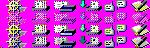

http://home.netscape.com/misc/trademarks.html#trademarks
This document identifies many, if not all, of the resources that contain trademarked information. While it is hoped this list is both definitive and correct, there may be other instances of trademarked strings, bitmaps, icons or other images in the product that are not listed. If you find an instance of what appears to be a trademarked item that is not listed in these pages, please let me know.
Summary
You may NOT use the following words, images or icons in your localized
product (except to express Netscape Communications' copyright or trademarks):
You MAY use the following module names in your localized product:
| Name: | Netscape brand names |
|---|---|
| Example: | Netscape, Collabra |
| Resource ID(s): | Use the links below to see the individual resources in each DLL that (may) need changing. |
| Instructions: | You must remove or replace any reserved trademarked string with your own company, organization or other unique name. These strings exist in MENU, DIALOG and STRINGTABLE resources. (Remember, .DOG files are version specific, so if you are using a kit based on version x to localize version y, the .DOG files may not give you every instance of these strings. In that case, you need to search the resources directly.) If that resource is a localizable (i.e., not forbidden) one, you must remove or replace the word "Netscape" or "Collabra" in that resource. NOTE: there are instances where these strings should not be replaced, such as in registry entries, .INI file names, etc. These should be marked DON'T TRANSLATE in the localization notes, so pay attention to these. |
| BRPREF32.DLL | |
| EDITOR32.DLL | |
| EDPREF32.DLL | |
| NSMAILUI.DLL | |
| NSNOTIFY.DLL | |
| PREFUI32.DLL (no trademarked resources) | |
| RESDLL.DLL | |
| Name: | "N" logo |
|---|---|
| Example: | |
| Resource ID(s): | BITMAP 466, 169, 1337, 1445, 1477 |
| Instructions: | You must remove or replace this with your own bitmap. |
| Name: | "Shooting stars" animation |
| Example: | |
| Resource ID(s): | BITMAP 1000, 1100 |
| Instructions: | you must remove or replace this with your own animation. You should preserve the number of frames and color depths of these bitmaps in your version. |
| Name: | "Ship's Wheel" bitmaps |
| Example: |  |
| Resource ID(s): | BITMAP 1376, 2001 |
| Instructions: | You must replace the ship's wheel with your own image. You should use the same size image and fore- and background colors as the original. |
| Name: | Splash screen |
| Example: |  (not to scale) (not to scale) |
| Resource ID(s): | BITMAP 1474 |
| Instructions: | You must replace this with your own splash screen. You should use the same size image as the original and leave room where the black area is for the start up messages to appear. Note that this bitmap contains the "lighthouse" image, which is a Netscape trademark. |
| Name: | "Ship's Wheel" icon |
|---|---|
| Example: | |
| Resource ID(s): | ICON 2 |
| Instructions: | You must remove or replace this with your own icon. There are two images of this icon, a 32 x 32, 16 color one and a 16 x 16, 16 color one. Be sure to replace both. |
| Name: | "Netscape Document" icon |
| Example: | |
| Resource ID(s): | ICON 4 |
| Instructions: | You must remove or replace this with your own icon. There are two images of this icon, a 32 x 32, 16 color one and a 16 x 16, 16 color one. Be sure to replace both. |
| Name: | "N" icon |
| Example: | |
| Resource ID(s): | ICON 256 |
| Instructions: | You must remove or replace this with your own icon. There is only image of this icon, a 32 x 32, 16 color one. |
| Name: | "SPLASH_IMAGE" GIF |
|---|---|
| Example: | |
| Resource ID(s): | DATA:"SPLASH_IMAGE" |
| Instructions: | You must remove or replace this with your own image.
This is a GIF89a-type file that is stored in the DATA resources of RESDLL.DLL. To remove it, simply edit RESDLL.DLL with a resource editor and delete the "SPLASH_IMAGE" DATA resource. You must also alter the <IMG SRC="about:logo" ALT="Netscape Logo"> tag in the about: page HTML. (This is contained in STRINGTABLE resources in RESDLL.DLL, starting at resource ID 60200.) To replace this image with your own, follow these steps:
|